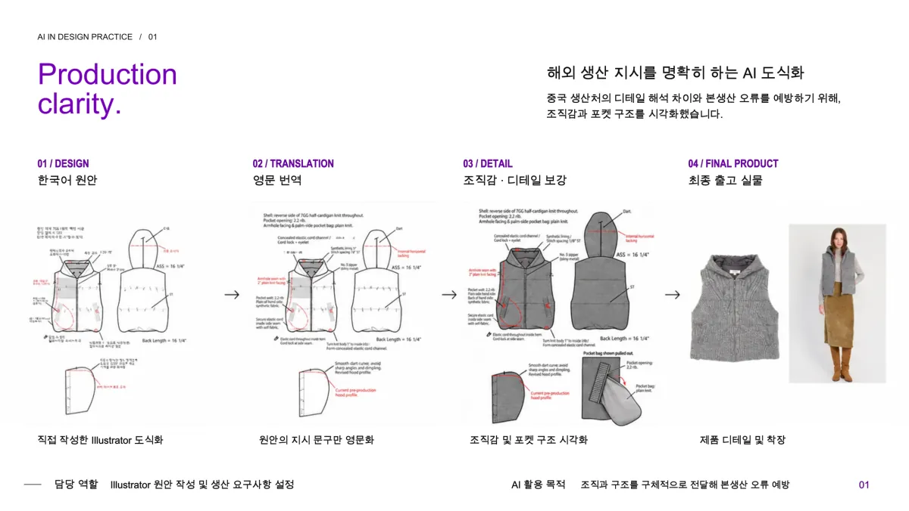
작업지시서를 해외 생산에 맞게 다듬었어요
도식만으로는 전하기 어려웠던 조직감과 포켓 안쪽 구조를 이미지로 보여주고, 지시 문구는 영어로 정리했어요. 덕분에 해외 생산처와 해석이 엇갈리는 일이 줄었어요.
협업과 캡슐 컬렉션을 프로젝트별로 모았어요.
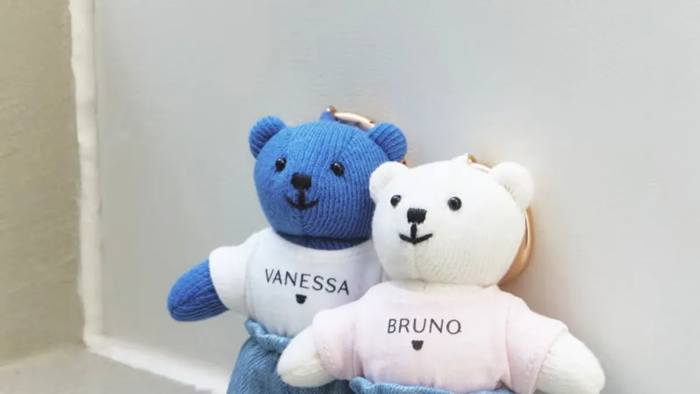
정윤기 디렉터와 함께한 본사 콜라보레이션 컬렉션.
25장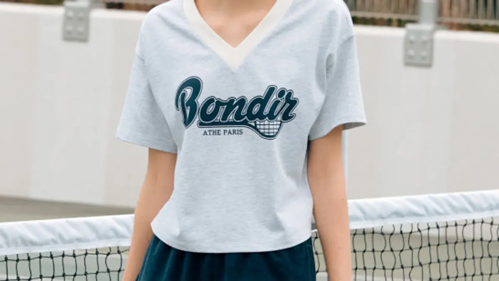
코로나 시기 변화한 라이프스타일과 젊은 소비자층을 겨냥해 기획한 테니스웨어 캡슐 컬렉션.
21장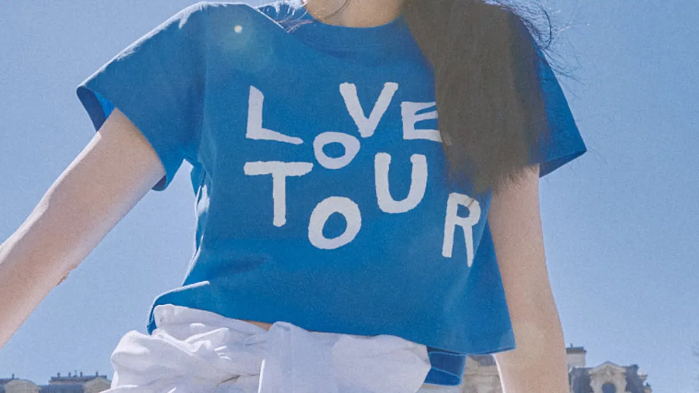
유지혜 작가와 함께 여행과 일상의 경계를 허무는 데일리 웨어 제안.
12장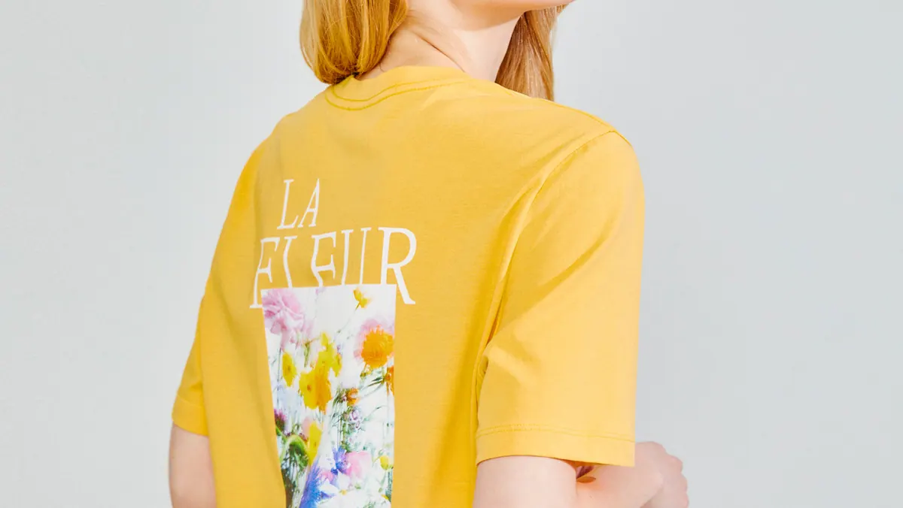
사진작가의 이미지를 활용한 다이마루 그래픽 컬렉션 단독 진행.
13장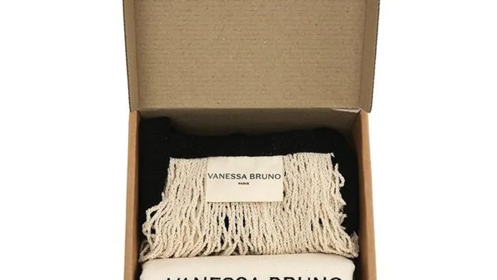
뉴 시즌 데님 텍션지의 레퍼런스를 제안하고, 제품에 적용될 쉐입과 도안을 개발.
14장시즌마다 진행한 스타일과 도식화를 카테고리별로 모았어요.
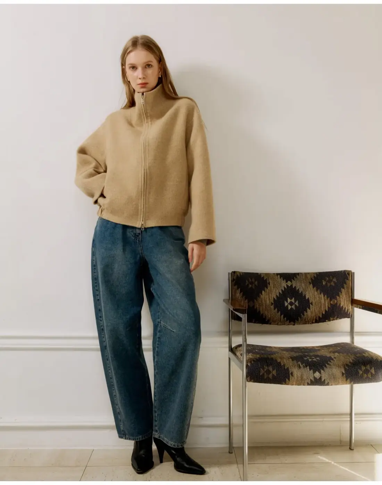
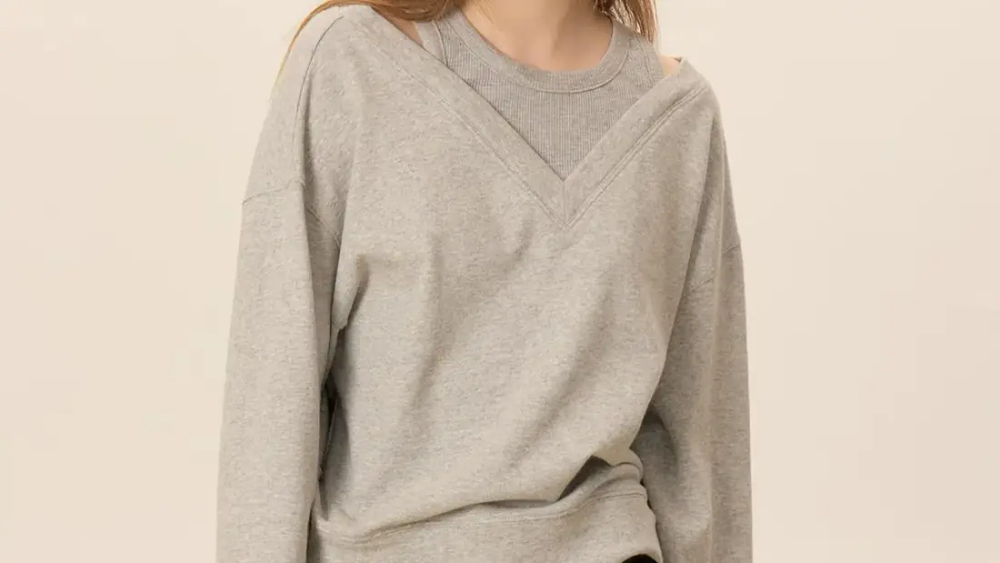
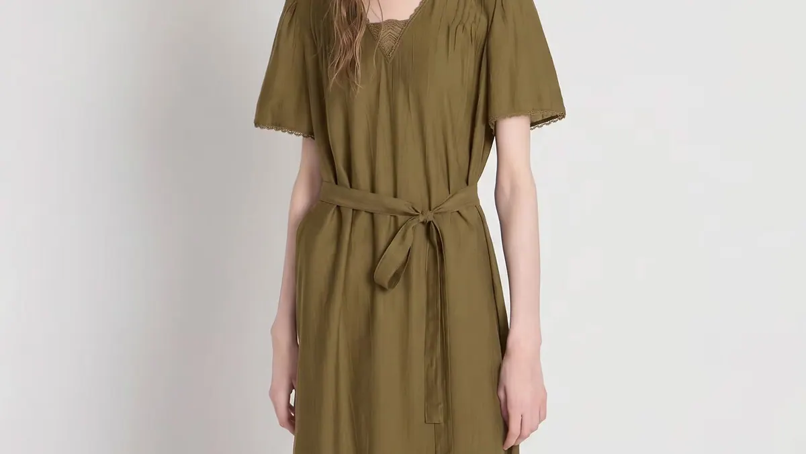
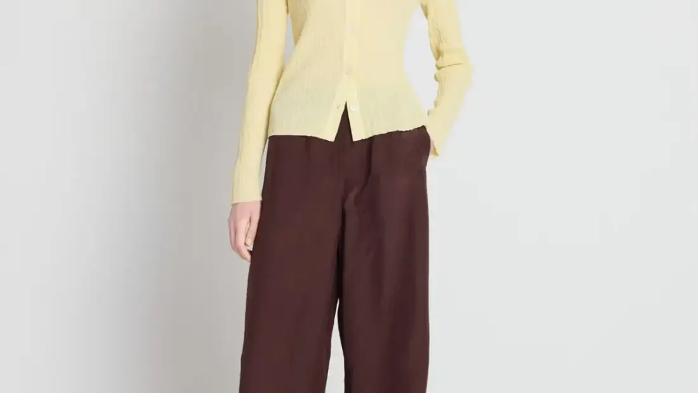
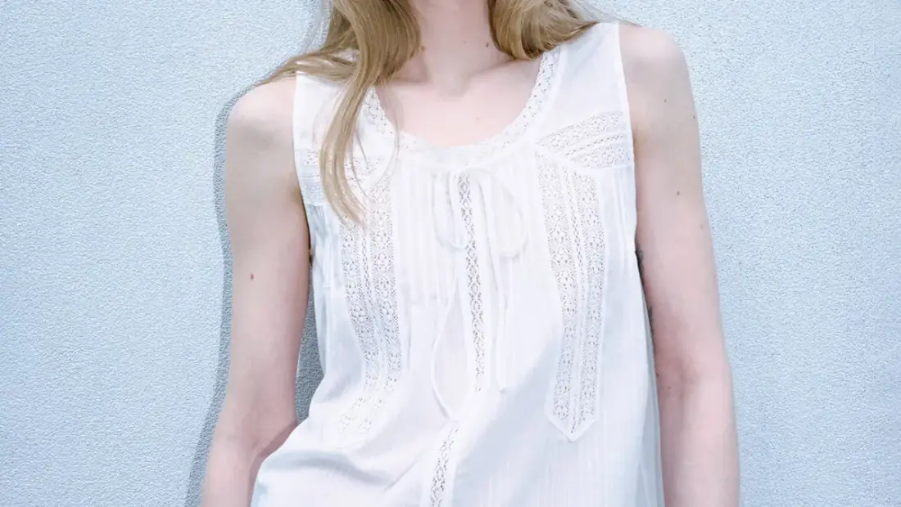
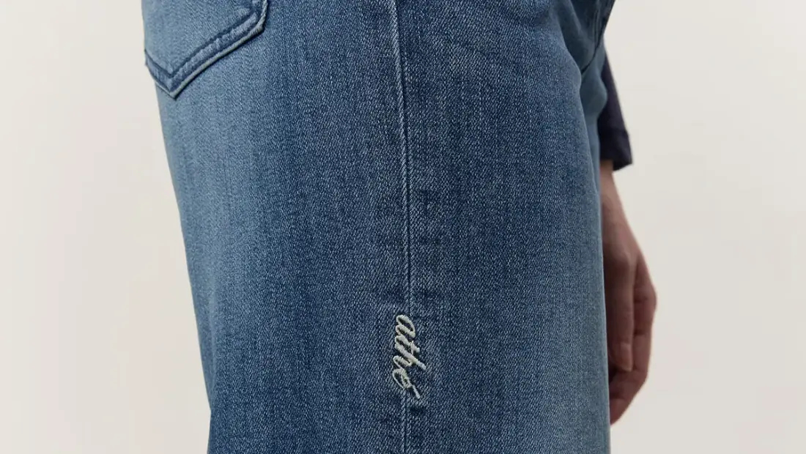
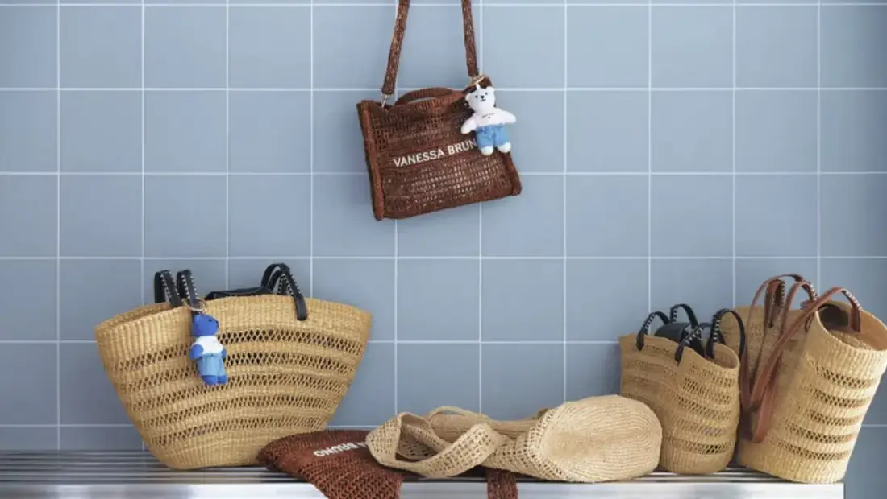
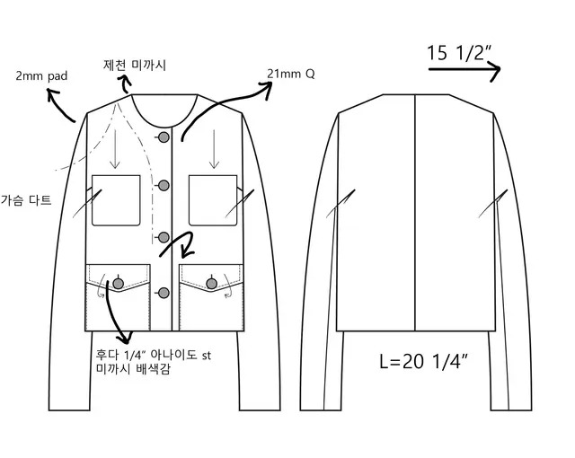
AI 3D 이미지 제작, 입체 목업 시각화
페이크 레더에 리얼 레더의 느낌을 살리기 위해 절개 디테일을 넣었어요.
저지를 두 겹으로 레이어드하고 밑단에 변화를 줬어요. 워싱 레더 스터드 벨트를 매치해 편안함은 살리고, 룩의 완성도를 높였어요.
첫 스케치부터 마지막 실루엣까지, 여성복을 만듭니다.